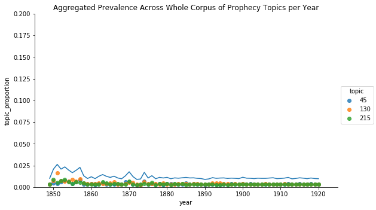
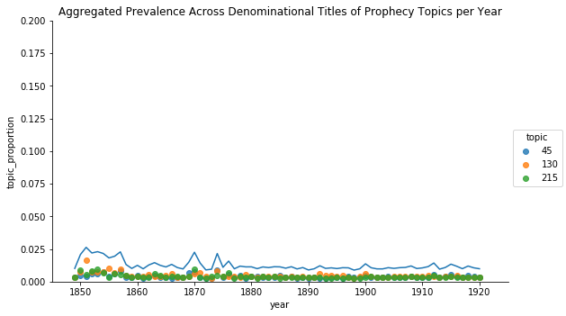

Anticipating the End of Time
A Historical Analysis through Topic Modeling
“We are living in the closing scenes of this earth’s history. Prophecy is fast fulfilling. The hours of probation are fast passing. We have no time – not a moment – to loose.”
Ellen White. Testimonies for the Church, Volume 8, 19041
Early Seventh-day Adventists were a people between times. Born out of the belief that William Miller had correctly identified 1844 as the year revealed in the books of Daniel and Revelations, this group of Protestant Christians understood themselves to be living in the last days, preparing for the rapidly approaching “second advent” of Jesus. Millennial expectation, however, is a difficult state to maintain.2 Although Seventh-day Adventists determined early on that predicting new dates for the second coming was no longer viable, at various period throughout their early history they understood themselves to be at the brink of the second coming. As the second coming continued to be delayed, their interpretations of the events since 1844 shifted, as did the emphasis they placed on different religious beliefs and practices. As a result, their theology and religious cultural was shaped by “Jesus’ nonappearance rather than his imminent reappearance,” as the most productive periods of development tended to occur in efforts to explain the why of the continuation of normal time.3
These periods correspond with but also offer an additional perspective on some of the standard narratives around religious revivals and the development of religious groups. Using the a 250 topic model of the periodical literature of the denomination, this chapter offers an extended study of the cycles of expectation and explanation that mark the development of the Seventh-day Adventist denomination. Using topics that capture Seventh-day Adventist language about end times as indicators of high periods of expectation, I argue that the religious group experienced four major cycles of expectation and adjustment between 1849 and 1920. In each cycle, the markers of the anticipated second coming shift and in the wake of anticipation, new emphases emerged that shifted the focus of the denomination increasingly outward. This framework also provides another way to understand Ellen White’s writings regarding gender and religious leadership, as she repeatedly embeds women’s labor within the central concerns of the current temporal imaginary.
This introduction to the case study establishes the parameters for the case study, including the historical and theoretical frameworks, as well as methodology, and then uses the topic model to argue that there were four major cycles of end-times expectation during the first 70 years of the denomination. Each of these cycles is analyzed in the subsequent sections of the case study.
Introduction to Study
Topic modeling, as I discuss in the project overview, is a form of computational analysis that has been used in humanities context for descriptions of a collection of documents and for document discovery, but of which are fewer clear examples of use in historical analysis. This is, in part, because while tools like MALLET and Gensim make it easy to apply the LDA algorithm to a set of texts, doing so in a way that generates reasonable and reliable results is more difficult.[^Topic modeling has amassed its share of critics, and not without cause. Schmidt, corpus linguistics community .. ] In history, there … [ Blevins, Block, and Dispatch, Kaufman, ]. In literary studies, there have been attempts to apply more thorough statistical modeling through the models, looking at such things as gender and genre.4 though as Heather Froelich has pointed out
This project sets out to follow the suggestion of Sharon Block … primarily using the model to gain a broad pictures of the patterns across the texts and to identify those texts that can shed light on different aspects of the developing culture of the denomination.
[ standard parsing of revivals ] [ standard accounts of the development of the SDA ]
Methodology
One of the ongoing challenges for scholarship that brings together methods from multiple disciplines is articulating how the information derived through methods typically foreign to humanities practice meaningfully contributes to the process of meaning-making. As argued by Tanya Clement, the linking of theory and methods is crucial to the process of situating the intellectual work of interdisciplinary scholarship.5 As part of bridging that gap, here I outline my interpretive strategy for moving from the topic model, a statistical representation of language patterns, to an argument for overall patterns in the denominational corpus.6 The full model, which you can engage via the model browser, parses the language of the denomination into 250 clusters of words that tend to co-occur on the pages of the periodicals.
The modeling algorithm returns a topic identifier for each word in the documents, an account of the most prevalent words in each topic, and a report of the prevalence of each topic in the documents of the corpus, but is agnostic as to what those topics “mean.” Standard practice is to use a topic label to summarize the language that a topic has grouped together, either by assigning it automatically from the most prevalent words in the topic or through manually assigning topic names.7 Because the language used by Seventh-day Adventist authors tends to be abstract and formulaic, methods for automatic labeling that work well in the context of scientific articles or Wikipedia proved less than informative. As a result, I relied on a human authored approach for identifying and labeling the topics.
Labeling the topics represents significant interpretive work based on close readings of the texts and the topic words. To mitigate the risk of reading too much into individual combinations of words clustered by the modeling algorithm, for each topic I read the ten to fifteen documents with the highest concentration of words assigned to that topic, and used that contextual information, together with the words of the topic, to construct the label. This method of close reading the topic results provided a more nuanced view of the pattern of word use the model had detected and helped me parse instances where similar words in the topic captured very different sets of documents. For example, topic 6 shares similar language with the “prophecy” topics that I discuss in the next section, such as the high prevalence of “daniel” and “babylon.” However, in reading the documents associated with the topic, it was apparent that the words captured by this topic were most often found in pages that contained Old Testament stories, particularly those from the historical and prophetic books such as Daniel in the Lion’s Den and the story of Esther.
Through the process of labeling the generated topics, I as the reader and interpreter bridged the gap between the model of the denominations literature created using a statistical algorithm and the models of literature created through traditional close-reading techniques. Working with set of text too large for me to read thoroughly and establish the categories of which on my own, I use the model to separate the texts into groups based on language use, use close reading of a select number of documents to understand the themes that the topic model has captured, and then use the model to get a sense of how that theme is present in the documents I have not read.
In addition, in order to more easily facilitate grouping related topics together, I created a controlled vocabulary of [x] terms. The vocabulary works to capture the major topics of the periodical literature, as separated by the topic model and identified through my evaluation, and forms the first part of the topic label. The second part of the label provides a more detailed description of the type of content within that general category. I designed this labeling scheme in order to facilitate the research goals of the project. At 250 topics, the model of the literature strikes a compromise between being generalized and being detailed. As a result, there is some overlap in topics. This provides the advantage of nuance and increases the opportunity to see shifts in language over time. However, it also makes the model more difficult to read and understand, as the fragmentation of theme over multiple topics makes is difficult to grasp broader trends. By using the labels to group topics back together, I am able to add yet another lens through which to view the corpus literature.
The labels enable readers navigate the model and provide the foundation for the work that follows in which I trace the broader picture of the prevalence of particular subjects at different times. By moving back and forth between close readings of the text and the more abstract and distant reading of the model, the reader can begin to understand and explore the overall patterns in the literature and use those patterns to identify areas for closer analysis.
[Note: This is a work in progress. Most of the current topic labels are a tentative “first draft” and are being reviewed according to the process described above.]
Identifying Expectation
There are four interrelated themes that frequently occur when Seventh-day Adventist authors are concerned with and discuss the second coming. The first is a more formal explication of the key prophetic texts of Daniel and Revelations, where authors unpacked for the readers the meaning of the various figures and numbers in the biblical passages. [more] The second is in formal descriptions of the second coming,[ details coming ]. And the third is the parsing current and historical events in terms of their fulfillment of prophecy, or analyzing the “signs of the times,” and the forth is a concern with the union of civic and religious authority. United by the idea that “Prophecy is history in advance,”8 Seventh-day Adventist authors and readers sought to understand where they stood in the temporal landscape, to verify their understanding of 1844 and their particular role in the unfolding of God’s plan, and to explain the events of the day in light of the larger trajectory of God’s plan.
These four categories are overlapping - somewhat arbitrary divisions.
Explicating Prophetic Texts
For early Seventh-day Adventist authors, the Biblical books of Daniel and Revelations offered the keys for situating themselves and their readers in time. Informed by their “rationalist” approach to the Bible, whereby they hold that all of the Bible has a clear meaning that can be understood by the faithful reader, they approach the Bible as a guidebook with clear if coded information.9 Building on a Protestant understanding of history as the linear unfolding of a divine plan that stretches from creation to the second coming, the early Seventh-day Adventists sought to identify their current position in that progression, leading up to their final salvation at Jesus’ second coming. To do so, they looked particularly to the book of Daniel to explain events of the past and to the book of Revelations to explain current events and anticipate the events to come. In these books, part of the Apocalyptic literature of the Bible, the authors look forward in time and tell of the overthrow of world powers and the eventual establishment of God’s kingdom.10 Containing visions populated with fantastical symbolic creatures, from a leopard with four wings and four heads to beasts and dragons, the authors used coded language to encourage their audience with hope of the coming fall of oppressive powers and coming days of peace.11
Seventh-day Adventist authors derived their understanding of how to interpret these text and what they represented from William Miller. Born into a religious Baptist family, Miller embraced deism in his twenties, but found himself religiously unsettled by his experiences during the War of 1812. Returning to the Baptist church, he experienced a religious conversion marked by being overwhelmed by emotions and feeling the truth and value of the Baptist narrative of salvation.12 With a faith grounded in a conversion experience, Miller turned his attention to understanding and articulating the reasonableness of that faith. Working from a set of fourteen rules, which he derived from Biblical proof texts, he developed an interpretation of the Bible, and particularly the prophetic texts, that resolved its apparent contradictions – thereby satisfying the critiques of his deist friends – and that also revealed the approximate date of the looked-for second coming: 1843.13
Charts, such as the one to the left, were used by Millerite preachers to explain to audiences how to interpret the prophecies in Daniel and Revelations. Part of the publishing and outreach efforts of Joshua V. Himes, the charts provided a visual representation of Miller’s complicated, but methodical, interpretive work. In the upper left corner, the images from Daniel are depicted and aligned to show their correlation, with the head of the statue of Daniel, chapter 2, aligned with the lion of Daniel, chapter 7, the silver chest and arms of chapter 2 with the bear of chapter 7 and the ram of chapter 8 and so forth. Across the middle, the chart bridges between the books and Daniel and Revelations through the depictions of “Pagan Rome” - the iron legs of the statue in Daniel 2, the beast of Daniel 7, and the dragon of Revelations 12. The bottom half of the chart correlates the events of history since Jesus’ death with the extended images of Revelations. All of these different elements are tied together through the dates and computations that associate the years of different historical events with the periods of time recorded in the prophetic texts.
Early Seventh-day Adventists reconciled the continuation of time after 1844 with Miller’s interpretations by arguing that Miller’s interpretation as basically correct, but that they had misunderstood the significance of October 22, 1844. While most Millerites either concluded that the dates had been miscalculated or that Miller’s whole enterprise had been misguided, a small group embraced an interpretation put forward by Hiram Edson that the “cleansing of the sanctuary” referred not to the earth as Miller had thought but marked “a new phase of Christ’s ministry in heaven that placed the earth under judgment.”14 How long this new phase would last was unknown, but believers could point to the fulfilled prophecies to know that they were indeed living in the last days.
As a result, the interpretation of Daniel and Revelations found in Millerite charts continued to play a central role to Seventh-day Adventist efforts to situate themselves temporally. Captured across three topics of the topic model, Seventh-day Adventist authors used the figures and dates of Daniel and Revelations throughout their writings to argue for their unique sense of time, to explain current events, and to anticipate events to come.
| Topic ID | Topic Label | Topic Words |
|---|---|---|
| 45 | Prophecy (Figures of Daniel) | kingdom shall king horn daniel great empire prophecy rome iron verse power babylon dan image beast fourth world given vision |
| 130 | Prophecy (Figures of Revelation) | beast power image papacy rev mark church prophecy worship earth rome horn dragon shall head papal great state saint symbol |
| 215 | Prophecy (Interpreting Dates and Time) | daniel vision week period end dan prophecy sanctuary date shall jerusalem christ chapter event seventy_weeks gabriel decree point angel messiah |


As indicated in the above charts, while descriptions of prophetic texts and the work of situating readers within the Seventh-day Adventist temporal imaginary has a continual presence within the periodical literature of the denomination, its prevalence relative to other concerns decreased over time. This is the case even when looking only at the central denominational titles, excluding the topical and regional titles that proliferated after the 1880s. This is not to say that SDA authors became less interested in or came to question the uses of these texts over time or the temporal imaginary they were used to construct. Full explications of the texts and republication of material from the 1850s can be seen well into the 20th century.15 The decline is better understood as reflecting the embrace of the SDA system for explicating the texts of Daniel and Revelations and the development of a consensus around the position of the Adventist people in sacred time. While later authors may remind their readers of the standard interpretations, they were building on existing beliefs, rather than striving to convince their readers of a new sense of time, and so required less discursive space to communicate their message.
Eschatology - Describing the Second Coming
With their roots in the belief that 1844 marked the beginning of the final events before the second coming, eschatology, or the theological study of “last things,” has a significant presence in SDA literature and in their temporal orientation. From Ellen White’s seminal work, The Great Controversy, to some of their most distinctive theological contributions, including the Sanctuary Doctrine, Conditional Immortality, and the Sabbath Doctrine (discussed in Chapter One), understanding and describing the world to come and the events leading up to it was the focus of much of the intellectual energy of the early Seventh-day Adventists.16 While most Christian groups anticipate Jesus’ return in some form, for Seventh-day Adventists that return is central to their distinctive understanding of Scripture and their self-understanding as God’s chosen people.
The topics I identified as relating to eschatology, or the study of end-times, fit into two general categories. The first set of topics, including #37, #170, and #182, offer descriptions of heaven and the experience of the second coming, using biblical passages and poetry to remind believers of the goal of the Adventist Christian life and warnings about anticipated hardships leading up to the second coming. The second set, which includes #92, #117, and #145, outlines some of the unique theological positions the denomination took with regard to the fate of the wicked and the requirements for salvation. These topics remind readers of what to expect in the days leading up to the second coming. They also provide justifications as to why events did not unfold as previously expected, using the concept of progressive revelation, or “Present Truth,” to emphasize that God reveals his plan gradually and through imperfect messengers.17
| Topic ID | Topic Label | Topic Words |
|---|---|---|
| 37 | Eschatology (Descriptions of Heaven) | light glory heaven shall earth city life gate angel like sun beauty shine bright star glorious beautiful eye home throne |
| 92 | Eschatology (Fate of the Wicked at Second Coming) | shall earth wicked lord heaven rev righteous thousand isa city destruction place judgment end forever away saint new_earth verse everlasting |
| 117 | Eschatology (Parable of Bridegroom and Tarrying Time) | prophecy coming christ lord shall second advent sign event know word fulfilled end near thing fulfillment prophet generation unto world |
| 145 | Eschatology (Sanctuary Doctrine) | sanctuary priest holy sin place christ offering blood service atonement sacrifice tabernacle temple heavenly heaven heb ark high_priest lord priesthood |
| 170 | Eschatology (Events of the Last Days) | angel judgment rev earth heaven seal message seven plague book wrath revelation great saw thousand babylon given mark men voice |
| 182 | Eschatology (Description of Second Coming) | christ shall kingdom coming lord heaven second earth unto father throne jesus son saint glory king world man reign matt |


While the trajectory of these topics shows a slow decline over time in their prominence in the denominational literature, this again does not mean that these topics disappear from the denominational literature. During the first few decades of the denomination, these topics were key to establishing what would become standard Seventh-day Adventist understandings of the soul, the work of salvation, and the role of Adventists in the final events before the second coming. As these concepts became more ingrained in Adventist theology and became basic to their cultural imaginary, fewer words would have been needed to invoke these ideas for readers.
Interpreting the Signs of the Times
As a people eagerly awaiting the second coming and who believed that they could orient themselves in divine time by matching current events with events described in the Bible, denominational members closely watched news and world events. From cataloging catastrophic events and examples of government oversteps in regulating religious behavior to extended analyses of world events in light of prophecy, nearly every world event held the potential of signaling some new phase in the events leading up to the second coming. While commentators often warned readers against setting dates and reminded them that their knowledge was incomplete, the regularity of the topics served to remind readers that they were indeed living in the last days. As such, they were called on to make themselves ready and to share the Adventist message with the world.
The signs frequently mentioned by Adventist commentators range from concerns over sin and social ills to commentary on world events in light of prophecy. Spiritualism, then a prominent competitor in the religious space, and sin “as in the days of Noah” were of particular concern in the early years of the denomination (topics #26, #86). In later years, as the attention of the denomination shifted outwards, concerns about war and social unrest (topics #27, #39, #163) were the primary markers of the current point in divine time. At the turn of the century, the growing influence of Progressive reformers and those advocating for Sunday observance laws loomed particularly large in the Adventist imaginary, as signs that the anticipated collusion between the United States and the Catholic Church to enforce Sunday worship and persecute Adventists was at hand (topics #158, #242). Among the more curious “signs” are those recorded in topic #100, which captures frequent retellings of the darkening of the sun on May 19, 1780 and accounts of stars falling on November 13, 1833, some of the more supernatural-seeming events portending the second coming.18 And throughout the period, authors warned readers to anticipate unrest and persecution in the time leading up to the Jesus’ return (topic #179). World events were not just curiosities, but vital clues in tracing the unfolding of God’s plan.
| Topic ID | Topic Label | Topic Words |
|---|---|---|
| 26 | Signs of the Times (Spiritualism) | spirit spiritualism devil satan power miracle dead spiritualist wonder medium deception shall know sign believe delusion bible working world truth |
| 27 | Signs of the Times (“Eastern Question”) | russia turkey power russian europe war turkish turk constantinople england government france germany empire great austria sultan armenian european czar |
| 39 | Signs of the Times (Social Unrest) | world great nation men condition new history social war america problem country movement present question force century political society hope |
| 86 | Signs of the Times (Growing Iniquity as in Days of Noah) | shall world noah men flood lord lot coming ark man earth lover sodom son sin away destruction tim word godliness |
| 100 | Signs of the Times (Astronomy) | sun star earth moon light heaven hour darkness night planet sign world east line seen west great place sky phenomenon |
| 158 | Signs of the Times (“Catholic Threat”) | catholic church pope rome protestant roman priest catholic_church papacy bishop cardinal papal power protestantism country authority state vatican america holy |
| 163 | Signs of the Times (War) | war peace nation world men great shall earth europe battle let sword armageddon army prophecy preparation spirit strife conflict international |
| 179 | Signs of the Times (Global Unrest) | shall world coming sign earth thing end nation lord great prophecy men event word trouble know near christ war destruction |
| 242 | Signs of the Times (Enforcement of Sunday Laws) | sunday law case court judge state adventist seventh fine trial arrested county police city tennessee sabbath arrest persecution fined jail |


Taken together, denominational concern with parsing events as signals on the road to the second coming remained generally consistent over the first seventy years of the denominations development. While authors called attention to different types of signs at different points in time, the assumption that believers could and should interpret world events to identify their current position in divine time.
Threats to the Separation of Church and State
One particular topic of concerns, and one that developed as Seventh-day Adventist began focusing more on the role of United States in the events leading up to the second coming, was the threat of the legal establishment of religion. This was a particular concern for early Seventh-day Adventists, as they had identified the first amendment and the prohibition against the establishment of religion as key aspects of the uniqueness of the United States, and the establishment of religion as the first step in the unfolding of the persecution of Adventists prior to the second coming. As resistance to the legislation of religion was understood to be one of the marks of true believers, believers tracked efforts to promote the passing of religion laws, and politically organized members to resist those efforts.
| Topic ID | Topic Label | Topic Words |
|---|---|---|
| 42 | Church & State (Opposition to Religious Legislation) | sunday state congress law petition liberty religious religious_liberty committee legislation senator district senate measure house united legislature representative amendment washington |
| 137 | Church & State (Religious Amendments and National Reform Association) | state christian national government church religion nation reform constitution law christianity principle union united religious power political country shall christ |
| 153 | Church & State (Arguments against Sabbath Laws) | sunday law sabbath rest state religious observance right legislation civil week man church men labor religion seventh christian observe question |
| 166 | Church & State (Sabbath Laws) | sunday fair sabbath church world closing christian congress union rev chicago exposition law said association city american convention national open |
| 210 | Church & State (Religion Legislation and the Courts) | law shall state court act decision person case constitution judge supreme_court united section statute labor provision public said sunday justice |
| 221 | Church & State (Religion in Public Education) | church state catholic religion protestant school religious public_school public roman government christian denomination country american baptist united mormon methodist presbyterian |


During this period of study, the most prominent movements to legislate behavior and religious practice occurred during the closing decades of the nineteenth century. Often in connection with temperance movements, Protestant religious leaders promoted what they claimed to be laws promoting general morality and social norms regarding Sunday observance. While at times these laws were drafted granting exceptions for those who designated other days for religious worship, Seventh-day Adventist leaders and others decried them as attacks on freedom of religion and the principle of religious liberty. Any attempt to exercise state power in issues of religion was the beginning of the end, both of the nation and of time, for Adventist commentators.
So important was this issue to the Adventist readership that it received a series dedicated periodical titles - Liberty, Sentinel of Liberty. In looking at the overall prevalence of the topic, these individual titles exaggerate the prevalence of the topic particularly in the years surrounding 1890. However, even when looking just at these topics in the central denominational titles, an increase in attention is visible, first around 1890 and again around 1905, in concerns about church and state.
Tracing Periods of Expectation


Looking at all of these topics across the first seventy years of the denomination, two general features emerge. First, over time the prevalence of these topics decreases, as the denomination becomes …
This fits with the pictures of end-time expectation described by Paulson …
Bull and Lockhart note that the Seventh-day Adventist community has historically tended to be relatively quiet about end times during periods of disruption, such as war, while instead active in periods prior or following.19 While the authors note this pattern as a curiosity, the pattern makes sense given the type of signs the early Adventist community was on
@White1904, p. 252.↩
should link to McLoughlin here↩
@Bull2006, p. 67↩
cite Underwood and Jockers, Rhody.↩
@Clement2016↩
For a discussion of the more technical concerns of corpus creation and topic modeling, see chapter 2.↩
cite examples↩
@Cook1850, p. 8↩
cite Bull here↩
cite oxford dictionary of christian church, 69↩
I need to link to something …Possibly John Collins.↩
For a full history of Miller see @Judd1987, pp. 17-23; for an Adventist and more apologetic history of Miller, see @Dick1998, p. 3.↩
Judd provides a list of Miller’s fourteen rules of interpretation in @Judd1987, pp. 20-21 These were: “1. Every word must have its proper bearing on the subject presented in the Bible. 2. All scripture is necessary, and may be understood by a diligent application and study. 3. Nothing revealed in the scripture can or will be hid from those who ask in faith, not wavering. 4. To understand doctrine, bring all the scripture together on the subject you wish to know; then let every word have its proper influence, and if you can form your theory without contradiction, you cannot be in error. 5. Scripture must be its own expositor, since it is a rule of itself. … 6. God has revealed things to come, by visions, in figures and parables, and in this way the same things are oftentimes revealed again and again, by different visions, or in different figures, and parables. If you wish to understand them, you must combine them all in one. 7. Visions are always mentioned as such. 8. Figures always have a figurative meaning, and are used much in prophecy, to represent future things, times and events; such as mountains, meaning governments; beasts, meaning kingdoms; waters, meaning people; lamp, meaning Word of God; day, meaning year. 9. Parables are used as comparisons to illustrate subjects, and must be explained in the same ways as figures by the subject and Bible. 10. Figures sometimes have two or more significations, as day is used in a figurative senses to represent three different periods of time … if you put on the right construction it will harmonize with the Bible and make good sense, otherwise it will not. 11. How to know when a word is used figuratively. If it makes good sense as it stands, and does no violence to the simple laws of nature, then it must be understood literally, if not, figuratively. 12. To learn the true meaning of figures, trace your figurative word through your Bible, and where you find it explained, put it on your finger, and if it makes good sense you need look no further, if not, look again. 13. To know whether we have the true historical event for the fulfillment of a prophecy. If you find every word of prophecy (after the figures are understood) is literally fulfilled, then you may now that your history is the true event. But if one word lacks fulfillment, then you must look for another event, or wait its future development … 14. The most important rule of all is, that you must have faith. It must be a faith that requires a sacrifice, and, if tried would give up the dearest object on earth, the world and all its desires, character, living, occupation, friends, home, comforts, and worldly honors.”↩
@Butler1974, p. 178.↩
cite examples↩
quote from Bull on nonappearance; or Butler on how the justification of SDA believers will be at the second coming.↩
This will need a citation. Or maybe better in chapter 1.↩
more context and links to secondary on this, b/c it is fascinating.↩
@Bull2006, pp. 61-64.↩